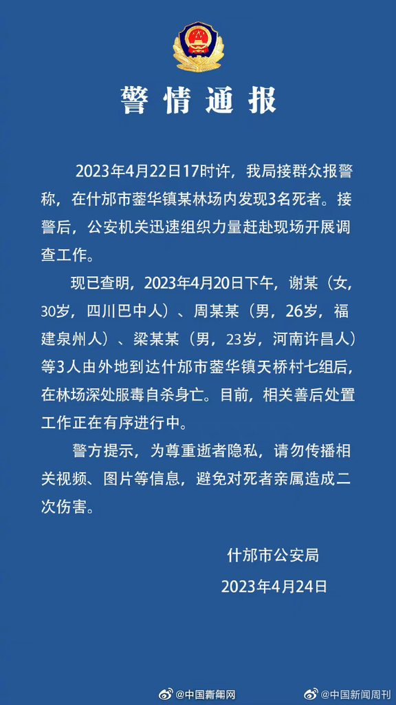

May 18, 2023
我以前也爱去网红景点，后来发现每次去都跟吃屎一样，但是为了装逼还非要发图说这不错那不错
现在我彻底明白了，旅游纯属消费主义骗局
旅游的时候，你做的无非就是订机票订酒店选饭店付账，这种行为并不会让你有什么提升
很多景点都是人造的假的
那些历史文化很多是刚发明的
你去了二环里面的胡同儿，其实你屁都学不到，你也会发现他们和我们没啥不同，没什么特别的京味儿，没什么戏剧化的冲突
比起去马尔代夫，我觉得去深圳大梅沙的免费海滩泡泡澡就足够舒服了
May 15, 2023
乘坐摩天轮的生意人
我看到一个浑身肌肉振颤速度比常人更快的男人，快步走上前来，拿着一叠门票，故意提高了音量询问工作人员：可以包舱吗？我以为他是不愿意与丑陋又邋遢的我共同乘坐摩天轮，瞬间感到自卑与羞愧起来。
工作人员看了他手上的票，说: 包仓需要买专门的票, 如果你要包仓的话我可以帮你联系…
这时候后面一位小老头带着一大群人跟了上来，那个男人打断工作人员还未出口的话，又高声说：票买了不能包仓就算了吧。
进入了轿厢，我才知道那个小老头叫罗总，大家围着他给他介绍：这个摩天轮到达顶端的时间是13分14秒。罗总僵硬地笑了笑，随行的女子立刻挤出笑脸凑过去解释：1314代表的是一生一世。罗总笑得更加尴尬了一些，不知道他是对年轻人的潮流文化感到陌生还是昨晚与小三在套房里的缠绵让他对一生一世这个词语感到荒谬。
后来他们又聊了许多关于房产、创业、人才、子女教育、出国等词汇的东西，也没有什么新的观点，几乎就是复述抖音热门视频，连我都感到十分无聊，但是他们依旧非常沉迷，以至于在13分14秒摩天轮到达顶端的时候，他们忘记了看一眼窗外的景色。
May 6, 2023
我在床上睡觉，被子睡在我的身上，原来我也是床，只有被子才是真正在睡的人。（转载）
April 24, 2023
今天，老乡自杀了，可能是昨天，我不清楚
我比较惊讶的不是老乡的自杀，而是为什么有那么多人还没有自杀

April 2, 2023
在摩天轮的轿厢里，一个小女孩抱着爸爸的大腿大叫：爸爸，我要你抱我，你好久都没有抱我了
那时，同乘的其他人都在自顾自地麻木地摆拍朋友圈的素材，而我的内心却忽然被触动
只有这个还没被社会规训的幼小人类，才能如此真诚地表达自我。在我三十多年的人生中，从来没有遇到一个女孩跑过来对我说：我想要你抱我。即使人类如此孤独，他们也从未作出如此真诚的表达.
我忽然想起我的民间哲学家友人曾说过：鲁迅笔下的阿贵才是塞里斯唯一的鲜活的人，一句“吴妈，我要跟你困觉”就让他成为了整个塞里斯最有人味儿的人。